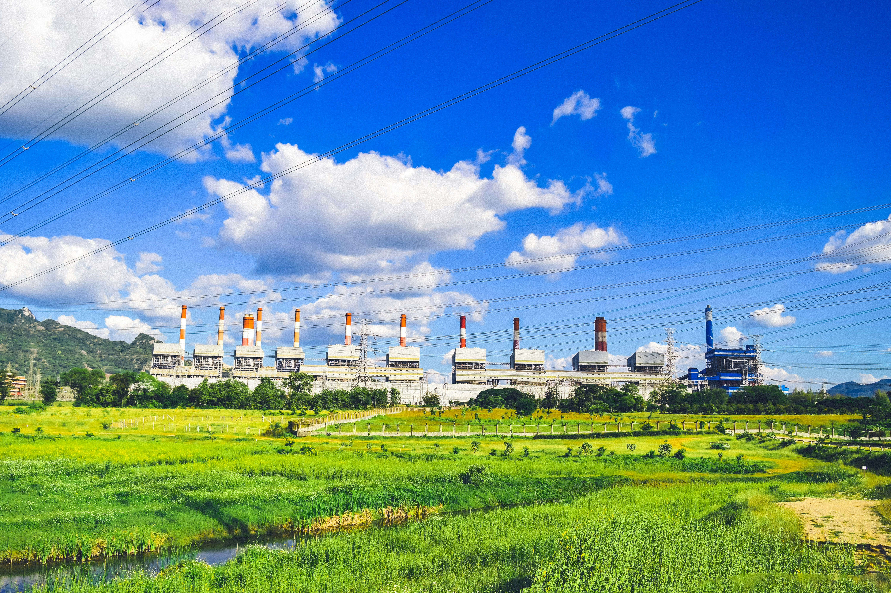

HOME > ESG경영 > 지속가능경영
지속가능경영Chemistry for a Sustainable Future
미래 세대를 위한 금호석유화학의 변함없는 약속
데이터로 증명하는
지속가능경영
정량적 지표와 엄격한 검증을 바탕으로 매년 지속가능경영
성과를 투명하게 공개하고 목표를 체계적으로 실행합니다.
추상적 구호가 아닌 실측치로 입증합니다.
-
온실가스 감축 목표 초과 달성
113%2025년 온실가스 직접 감축 계획 대비 달성률
-
공급망 상생협력 금융 지원
168억+ 우수협력사 상생펀드 대출 지원 및 혜택
제공 규모 -
전사 폐기물 재활용률
89.5%2025년 전사 폐기물 재활용 실적
(목표 초과 달성)
-
co2
2030년 BAU 대비 온실가스 29% 감축 목표(Scope 1,2 기준)
29% 감축/ Target 2030- 2018년 온실가스 배출 기준
배출량 1,840천톤
- 2030 중간목표
BAU 대비 29% 감축
- 2050 Net–Zero
탄소중립 순배출 제로
- bolt
2025년 온실가스 감축 목표 113% 달성
- water_drop
여수 에너지 바이오매스 혼소율 10% 적용
- recycling
CCUS 설비 준공 및 가동 개시
- 2018년 온실가스 배출 기준
-
health_and_safety
사회 (Social) 안전보건 및 공급망 상생경영 실적
중대재해 Zero/ 공급망 상생- 안전보건경영
(ISO 45001 전 사업장 인증)
- 우수 협력사 상생펀드
연 168억원 규모 지원
- 인권영향평가
주요 사업장 확대 실시
대·중소기업 안전보건 상생협력 프로그램 참여 (24개사 지원)
주요 상주 협력사 제3자 ESG 평가 및 고위험군 컨설팅 실시
- 안전보건경영
-
gavel
지배구조 (Governance) 이사회 독립 및 윤리·준법경영
사회이상 비중 60%이상- 이사회 구성
(사외이사 비중 60% 이상 상시 유지)
- ESG 위원회
(이사회 산하 전문 위원회 운영)
- 컴플라이언스
(통합 리스크 관리 정책 제정)
그룹 ESG 협의체 운영 (연 4회 개최 및 실적 공유)
중장기 주주환원 정책 및 자기주식 소각 이행
- 이사회 구성

“미래 세대를 위한 금호석유화학의 변함없는 약속”
선도하는 지속가능경영으로 ESG 경영의 새로운 기준을 제시합니다.
2025 지속가능경영보고서 다운로드 (PDF) download- eco친환경 고부가가치
- diversity_3책임있는 상생 안전
- assured_workload투명한 책임경영